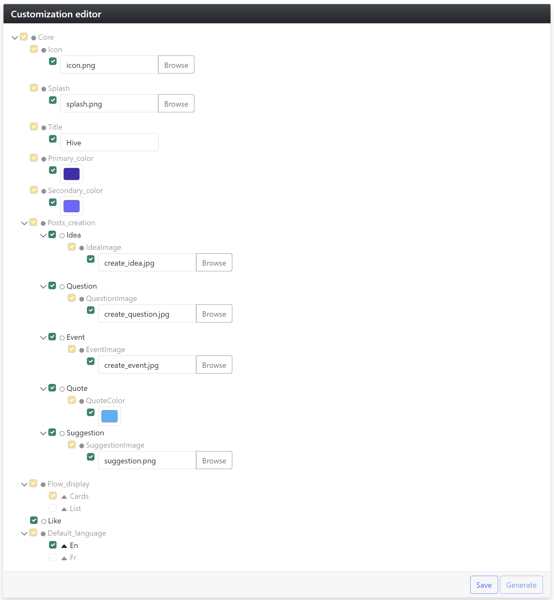
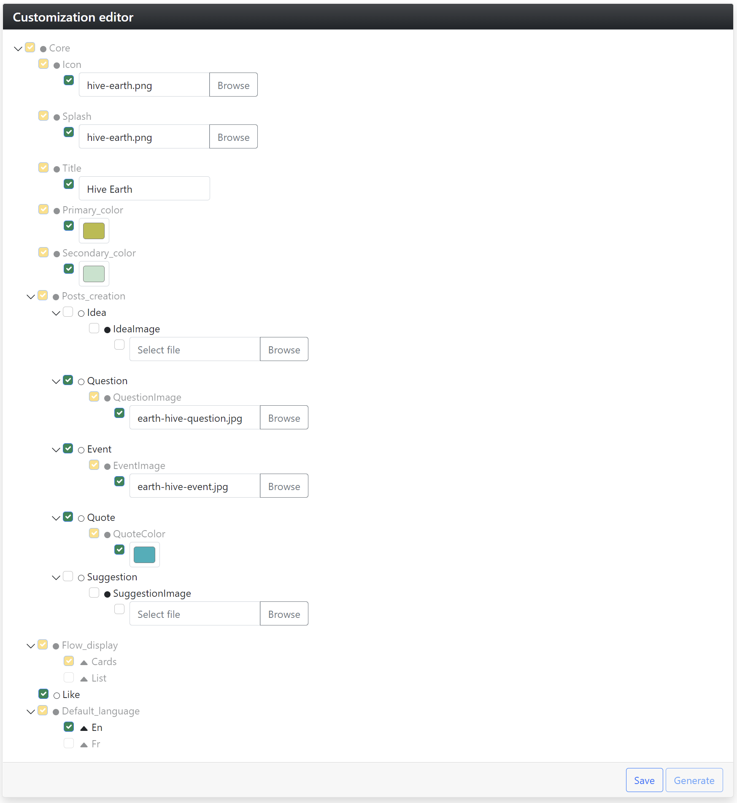
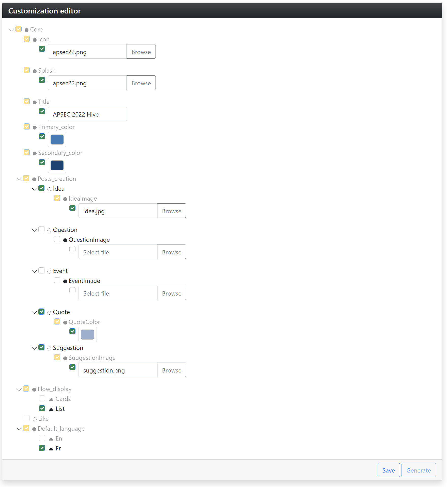
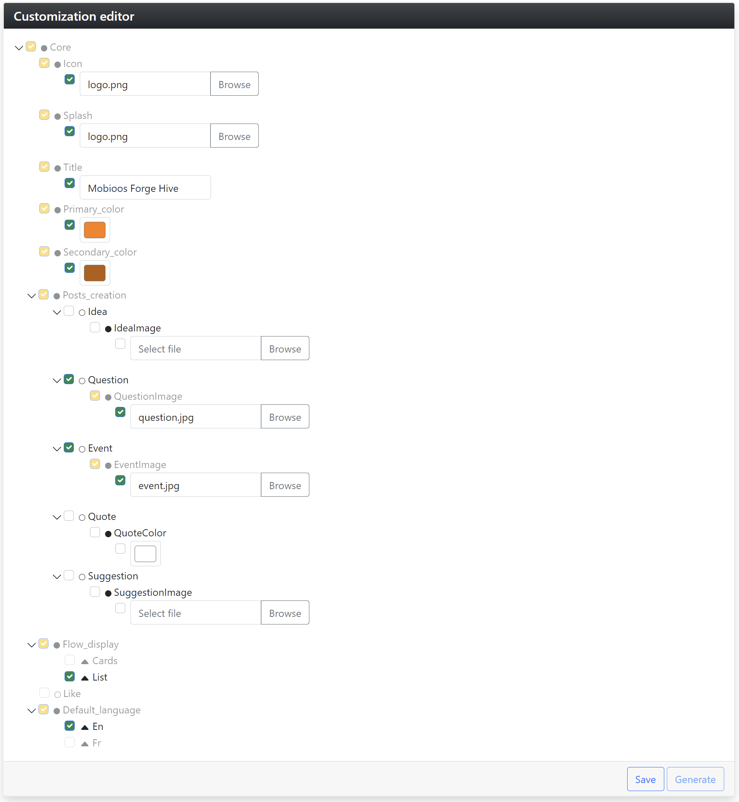

Migrating Enterprise Applications into Software Product Lines
Abstract
Adopting Software Product Lines (SPL) from the beginning, called proactive SPL adoption, is still a major challenge for companies.
This paper presents a new tool-supported approach called Mobioos Forge.
Mobioos Forge revisits the SPL adoption process with a new vision where the idea is to delay activities related to software variability after the application's implementation and coding.
In this paper, we illustrate the interest of Mobioos Forge by considering the challenge related to migrating enterprise applications into SPL.
We highlight the obtained feature model and show how features are mapped to the source code. We also illustrate the derivation process to generate the source code of several variants.
Open a terminal and go to the folder
smartapp/backend/
Build and run the backend: dotnet run
1.2 Running the frontend
Open a terminal and go to the folder
smartapp/frontend/
Install the dependencies: npm i
Run the frontend: npm start
Once the backend and the frontend are up-and-running, go to the client
localhost address.
2. Variant: All features enabled except
Lists and
French
The first variant introduced here is a variant where all the features
are enabled with the exception of Lists and
French as they are mutually exclusive with
Cards and
English. Regarding the
Primary and
Secondary colors, we decided to use purple
colors. Figures 3 and 4 show, respectively, the configuration used to
generate the variant and its execution.
2.1 Configuration

Fig.3 Configuration of the variant with all
features enabled except Lists and
French.
2.2 Snapshot of execution
Fig.4 Execution of the variant with all
features enabled except Lists and
French.
In this variant, the user can create any kind of posts. The flow screen
is organized with cards, and the display language is English. The UI of
the variant also uses the purple colors as initially provided in the
configuration.
3. Variant: Question,
EventQuote and
Like enabled with
Cards flow and
English display
Similar to the first variant, this variant has the
Cards and
English features enabled. However, the only
post types enabled here are Question,
Event and
Quote as we disabled
Idea, and
Suggestion. The feature
Like is also enabled. Figures 5 and 6 show
the configuration and the execution of the described variant.
3.1 Configuration

Fig.5 Configuration of the variant with
Question,
EventQuote and
Like enabled with
Cards flow and
English display.
3.2 Snapshot of execution
Fig.6 Execution of the variant with
Question,
EventQuote and
Like enabled with
Cards flow and
English display.
If you run this variant, you will see that
Idea and
Suggestion posts are disabled. You will also
notice that the UI now uses the provided colors.
4. Variant: Idea,
QuoteSuggestion enabled with
Lists flow and
French display
Unlike the first two variants, this variant has the
Lists and
French features enabled. Here, the only post
types enabled are Idea,
Quote and
Suggestion. We also provided blue shades as
colors to be used by the variant. Figures 7 and 8 show the configuration
and the execution of the described variant.
4.1 Configuration

Fig.7 Configuration of the variant with
Idea,
QuoteSuggestion enabled with
Lists flow and
French display.
4.2 Snapshot of execution
Fig.8 Execution of the variant with
Idea,
QuoteSuggestion enabled with
Lists flow and
French display.
By running the variant, you will be able to create
Ideas,
Quotes and
Suggestions. Also, you will notice a flow
screen organized with Lists and that the UI
language is now French.
5. Variant: Question and
Event enabled with
Lists flow and
English display
This following variant has the
Lists and
English features enabled. Concerning its
post types, the only enabled here are
Question and
Event. Figures 9 and 10 show the
configuration and the execution of the described variant.
5.1 Configuration

Fig.9 Configuration of the variant with
Question and
Event enabled with
Lists flow and
English display.
5.2 Snapshot of execution
Fig.10 Execution of the variant with
Question and
Event enabled with
Lists flow and
English display.
If you run this variant, you will only be able to create
Questions and
Events. Here we provided shades of orange as
the Primary and
Secondary colors.